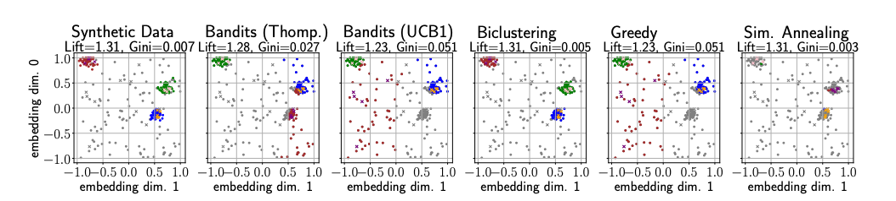
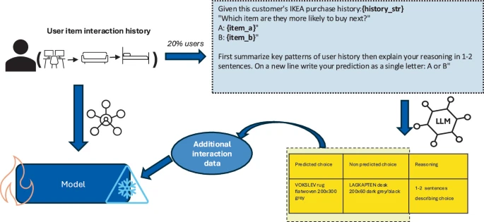
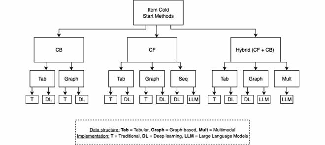

About me
Hi, I'm Natalija, a second-year Industrial PhD student at IKEA (Group Digital) and the Division of Robotics, Perception and Learning at KTH Royal Institute of Technology, supervised by Prof. Danica Kragic and Martin Tegner. My research focuses on context-aware recommender systems. I explore how additional signals such as text, images, and community knowledge can be leveraged to improve recommendation. My work spans methods for cold start, data sparsity, and multimodal integration.
Prior to my studies, I worked as a Data Scientist at IKEA in the loyalty and marketing area. I have a bachelor's in Psychology from the University of Aberdeen and a master's in Data Science from the University of Copenhagen. My academic work connects my background in psychology with machine learning: I am interested in how context shapes what people want, and in building systems that can read those signals from text, images, and the knowledge communities generate.
Publications
-

-

Data Augmentation with LLMs for Cold Start Recommendation in E-Commerce
Industry paper @ ECIR (European Conference on Information Retrieval), 2026
-

News
- May 2024Started my industrial PhD at KTH and IKEA.
- Sep 2025Our paper “Item Cold Start in E-Commerce Recommender Systems: A Survey” was published in IEEE Access.
- Mar 2026Presented our paper “Data Augmentation with LLMs for Cold Start Recommendation in E-Commerce” at the Industry Day at ECIR in Delft.
- Jun 2026Our preprint “Constrained user-item allocation for e-commerce marketing campaigns” is available on arXiv.